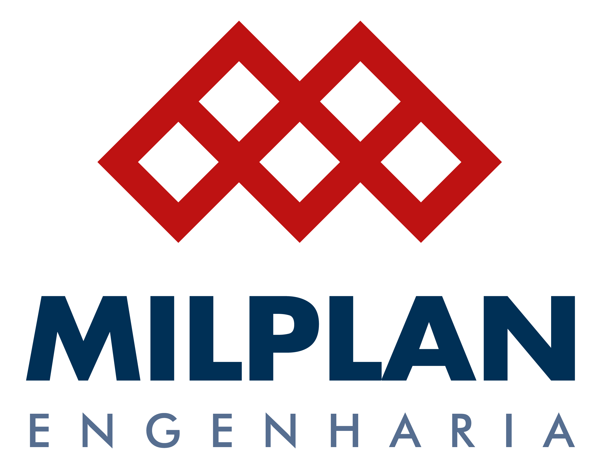

- WX2 Engenharia: laudos elétricos, SPDA e estudos de viabilidade para condomínios
SPDA é o sistema de proteção contra descargas atmosféricas, conhecido como sistema de para-raios. Realizamos laudos, inspeções, projetos e medições para orientar decisões com segurança.
Indústria e clientes comerciais
Condomínios
Consultoria, laudos e medições para entender as condições do aterramento e apoiar decisões técnicas com mais segurança.
Estudos para entender os riscos, limites e condições de operação da instalação antes de uma expansão, alteração ou decisão de proteção.
Estudos de carga e viabilidade para orientar novas instalações no condomínio, com linguagem clara para apoiar decisões do síndico e da administração.
A NR-10 orienta a segurança em instalações e serviços com eletricidade. Quando a empresa precisa organizar documentos, identificar pendências ou preparar uma adequação, a WX2 transforma as informações da instalação em um caminho de trabalho mais claro.
A atuação pode começar por um diagnóstico e avançar para laudos, RTI, PIE, auditoria, procedimentos, estudo de energia incidente, definição de ATPV e plano de adequação. O escopo é definido conforme a situação da empresa e formalizado no orçamento aprovado.
